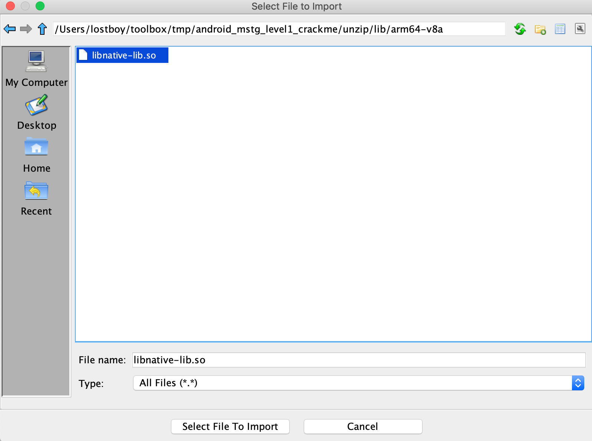
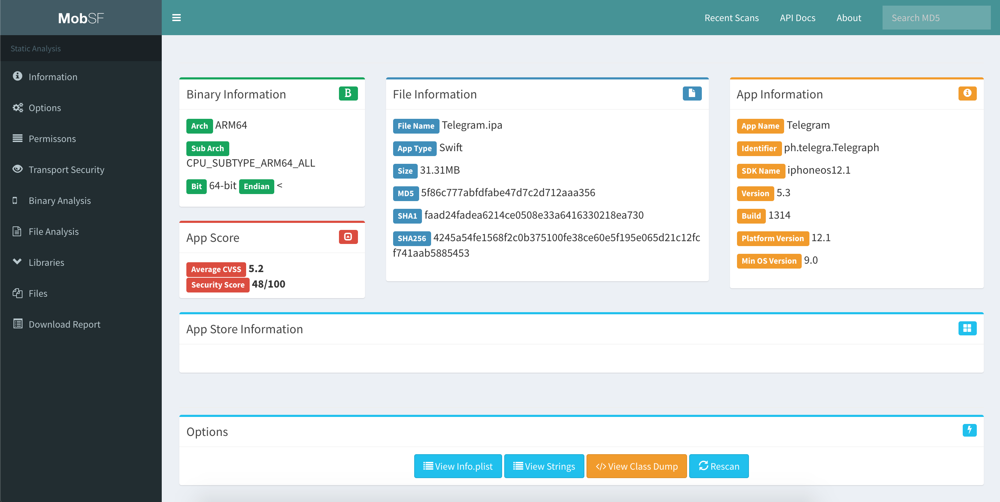
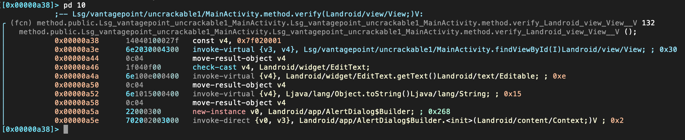

Testing Tools¶
To perform security testing different tools are available in order to be able to manipulate requests and responses, decompile apps, investigate the behavior of running apps and other test cases and automate them.
The MSTG project has no preference in any of the tools below, or in promoting or selling any of the tools. All tools below have been verified if they are "alive", meaning that updates have been pushed recently. Nevertheless, not all tools have been used/tested by the authors, but they might still be useful when analyzing a mobile app. The listing is sorted in alphabetical order. The list is also pointing out commercial tools.
Disclaimer: At the time of writing, we ensure that the tools being used in the MSTG examples are properly working. However, the tools might be broken or not work properly depending on your OS version of both your host computer and your test device. The functioning of the tooling can be further impeded by whether you're using a rooted/jailbroken device, the specific version of the rooting/jailbreak method and/or the version of the tool. The MSTG does not take any responsibility over the working status of the tools. If you find a broken tool or example, please search or file an issue in the tool original page, e.g. in the GitHub issues page.
Tools for all Platforms¶
Angr¶
Angr (Android)¶
Angr is a Python framework for analyzing binaries. It is useful for both static and dynamic symbolic ("concolic") analysis. In other words: given a binary and a requested state, Angr will try to get to that state, using formal methods (a technique used for static code analysis) to find a path, as well as brute forcing. Using angr to get to the requested state is often much faster than taking manual steps for debugging and searching the path towards the required state. Angr operates on the VEX intermediate language and comes with a loader for ELF/ARM binaries, so it is perfect for dealing with native code, such as native Android binaries.
Angr allows for disassembly, program instrumentation, symbolic execution, control-flow analysis, data-dependency analysis, decompilation and more, given a large set of plugins.
Since version 8, Angr is based on Python 3, and can be installed with pip on *nix operating systems, macOS and Windows:
$ pip install angr
Some of angr's dependencies contain forked versions of the Python modules Z3 and PyVEX, which would overwrite the original versions. If you're using those modules for anything else, you should create a dedicated virtual environment with Virtualenv. Alternatively, you can always use the provided docker container. See the installation guide for more details.
Comprehensive documentation, including an installation guide, tutorials, and usage examples are available on Angr's Gitbooks page. A complete API reference is also available.
You can use angr from a Python REPL - such as iPython - or script your approaches. Although angr has a bit of a steep learning curve, we do recommend using it when you want to brute force your way to a given state of an executable. Please see the "Symbolic Execution" section of the "Reverse Engineering and Tampering" chapter as a great example on how this can work.
Frida¶
Frida is a free and open source dynamic code instrumentation toolkit written by Ole André Vadla Ravnås that works by injecting the QuickJS JavaScript engine (previously Duktape and V8) into the instrumented process. Frida lets you execute snippets of JavaScript into native apps on Android and iOS (as well as on other platforms).
To install Frida locally, simply run:
$ pip install frida-tools
Or refer to the installation page for more details.
Code can be injected in several ways. For example, Xposed permanently modifies the Android app loader, providing hooks for running your own code every time a new process is started. In contrast, Frida implements code injection by writing code directly into the process memory. When attached to a running app:
- Frida uses ptrace to hijack a thread of a running process. This thread is used to allocate a chunk of memory and populate it with a mini-bootstrapper.
- The bootstrapper starts a fresh thread, connects to the Frida debugging server that's running on the device, and loads a shared library that contains the Frida agent (
frida-agent.so). - The agent establishes a bi-directional communication channel back to the tool (e.g. the Frida REPL or your custom Python script).
- The hijacked thread resumes after being restored to its original state, and process execution continues as usual.

- Frida Architecture, source: https://www.frida.re/docs/hacking/
Frida offers three modes of operation:
- Injected: this is the most common scenario when frida-server is running as a daemon in the iOS or Android device. frida-core is exposed over TCP, listening on localhost:27042 by default. Running in this mode is not possible on devices that are not rooted or jailbroken.
- Embedded: this is the case when your device is not rooted nor jailbroken (you cannot use ptrace as an unprivileged user), you're responsible for the injection of the frida-gadget library by embedding it into your app, manually or via third-party tools such as Objection.
- Preloaded: similar to
LD_PRELOADorDYLD_INSERT_LIBRARIES. You can configure the frida-gadget to run autonomously and load a script from the filesystem (e.g. path relative to where the Gadget binary resides).
Independently of the chosen mode, you can make use of the Frida JavaScript APIs to interact with the running process and its memory. Some of the fundamental APIs are:
- Interceptor: When using the Interceptor API, Frida injects a trampoline (aka in-line hooking) at the function prologue which provokes a redirection to our custom code, executes our code, and returns to the original function. Note that while very effective for our purpose, this introduces a considerable overhead (due to the trampoline related jumping and context switching) and cannot be considered transparent as it overwrites the original code and acts similar to a debugger (putting breakpoints) and therefore can be detected in a similar manner, e.g. by applications that periodically checksum their own code.
- Stalker: If your tracing requirements include transparency, performance and high granularity, Stalker should be your API of choice. When tracing code with the Stalker API, Frida leverages just-in-time dynamic recompilation (by using Capstone): when a thread is about to execute its next instructions, Stalker allocates some memory, copies the original code over, and interlaces the copy with your custom code for instrumentation. Finally, it executes the copy (leaving the original code untouched, and therefore avoiding any anti-debugging checks). This approach increases instrumentation performance considerably and allows for very high granularity when tracing (e.g. by tracing exclusively CALL or RET instructions). You can learn more in-depth details in the blog post "Anatomy of a code tracer" by Frida's creator Ole [#vadla]. Some examples of use for Stalker are, for example who-does-it-call or diff-calls.
- Java: When working on Android you can use this API to enumerate loaded classes, enumerate class loaders, create and use specific class instances, enumerate live instances of classes by scanning the heap, etc.
- ObjC: When working on iOS you can use this API to get a mapping of all registered classes, register or use specific class or protocol instances, enumerate live instances of classes by scanning the heap, etc.
Frida also provides a couple of simple tools built on top of the Frida API and available right from your terminal after installing frida-tools via pip. For instance:
- You can use the Frida CLI (
frida) for quick script prototyping and try/error scenarios. frida-psto obtain a list of all apps (or processes) running on the device including their names, identifiers and PIDs.frida-ls-devicesto list your connected devices running Frida servers or agents.frida-traceto quickly trace methods that are part of an iOS app or that are implemented inside an Android native library.
In addition, you'll also find several open source Frida-based tools, such as:
- Passionfruit: an iOS app blackbox assessment tool.
- Fridump: a memory dumping tool for both Android and iOS.
- Objection: a runtime mobile security assessment framework.
- r2frida: a project merging the powerful reverse engineering capabilities of radare2 with the dynamic instrumentation toolkit of Frida.
- jnitrace: a tool for tracing usage of the Android JNI runtime methods by a native library.
We will be using all of these tools throughout the guide.
You can use these tools as-is, tweak them to your needs, or take as excellent examples on how to use the APIs. Having them as an example is very helpful when you write your own hooking scripts or when you build introspection tools to support your reverse engineering workflow.
Frida for Android¶
Frida supports interaction with the Android Java runtime though the Java API. You'll be able to hook and call both Java and native functions inside the process and its native libraries. Your JavaScript snippets have full access to memory, e.g. to read and/or write any structured data.
Here are some tasks that Frida APIs offers and are relevant or exclusive on Android:
- Instantiate Java objects and call static and non-static class methods (Java API).
- Replace Java method implementations (Java API).
- Enumerate live instances of specific classes by scanning the Java heap (Java API).
- Scan process memory for occurrences of a string (Memory API).
- Intercept native function calls to run your own code at function entry and exit (Interceptor API).
Remember that on Android, you can also benefit from the built-in tools provided when installing Frida, that includes the Frida CLI (frida), frida-ps, frida-ls-devices and frida-trace, to name some of them.
Frida is often compared to Xposed, however this comparison is far from fair as both frameworks were designed with different goals in mind. This is important to understand as an app security tester so that you can know which framework to use in which situation:
- Frida is standalone, all you need is to run the frida-server binary from a known location in your target Android device (see "Installing Frida" below). This means that, in contrast to Xposed, it is not deep installed in the target OS.
- Reversing an app is an iterative process. As a consequence of the previous point, you obtain a shorter feedback loop when testing as you don't need to (soft) reboot to apply or simply update your hooks. So you might prefer to use Xposed when implementing more permanent hooks.
- You may inject and update your Frida JavaScript code on the fly at any point during the runtime of your process (similarly to Cycript on iOS). This way you can perform the so-called early instrumentation by letting Frida spawn your app or you may prefer to attach to a running app that you might have brought to a certain state.
- Frida is able to handle both Java as well as native code (JNI), allowing you to modify both of them. This is unfortunately a limitation of Xposed which lacks of native code support.
Note that Xposed, as of early 2019, does not work on Android 9 (API level 28) yet.
Installing Frida on Android¶
In order to set up Frida on your Android device:
- If your device is not rooted, you can also use Frida, please refer to section "Dynamic Analysis on Non-Rooted Devices" of the "Reverse Engineering and Tampering" chapter.
- If you have a rooted device, simply follow the official instructions or follow the hints below.
We assume a rooted device here unless otherwise noted. Download the frida-server binary from the Frida releases page. Make sure that you download the right frida-server binary for the architecture of your Android device or emulator: x86, x86_64, arm or arm64. Make sure that the server version (at least the major version number) matches the version of your local Frida installation. PyPI usually installs the latest version of Frida. If you're unsure which version is installed, you can check with the Frida command line tool:
$ frida --version
Or you can run the following command to automatically detect Frida version and download the right frida-server binary:
$ wget https://github.com/frida/frida/releases/download/$(frida --version)/frida-server-$(frida --version)-android-arm.xz
Copy frida-server to the device and run it:
$ adb push frida-server /data/local/tmp/
$ adb shell "chmod 755 /data/local/tmp/frida-server"
$ adb shell "su -c /data/local/tmp/frida-server &"
Using Frida on Android¶
With frida-server running, you should now be able to get a list of running processes with the following command (use the -U option to indicate Frida to use a connected USB devices or emulator):
$ frida-ps -U
PID Name
----- --------------------------------------------------------------
276 adbd
956 android.process.media
198 bridgemgrd
30692 com.android.chrome
30774 com.android.chrome:privileged_process0
30747 com.android.chrome:sandboxed
30834 com.android.chrome:sandboxed
3059 com.android.nfc
1526 com.android.phone
17104 com.android.settings
1302 com.android.systemui
(...)
Or restrict the list with the -Uai flag combination to get all apps (-a) currently installed (-i) on the connected USB device (-U):
$ frida-ps -Uai
PID Name Identifier
----- ---------------------------------------- ------------------------------
766 Android System android
30692 Chrome com.android.chrome
3520 Contacts Storage com.android.providers.contacts
- Uncrackable1 sg.vantagepoint.uncrackable1
- drozer Agent com.mwr.dz
This will show the names and identifiers of all apps, if they are currently running it will also show their PIDs. Search for your app in the list and take a note of the PID or its name/identifier. From now on you'll refer to your app by using one of them. A recommendation is to use the identifiers, as the PIDs will change on each run of the app. For example let's take com.android.chrome. You can use this string now on all Frida tools, e.g. on the Frida CLI, on frida-trace or from a Python script.
Tracing Native Libraries with frida-trace¶
To trace specific (low-level) library calls, you can use the frida-trace command line tool:
$ frida-trace -U com.android.chrome -i "open"
This generates a little JavaScript in __handlers__/libc.so/open.js, which Frida injects into the process. The script traces all calls to the open function in libc.so. You can modify the generated script according to your needs with Frida JavaScript API.
Unfortunately tracing high-level methods of Java classes is not yet supported (but might be in the future).
Frida CLI and the Java API¶
Use the Frida CLI tool (frida) to work with Frida interactively. It hooks into a process and gives you a command line interface to Frida's API.
$ frida -U com.android.chrome
With the -l option, you can also use the Frida CLI to load scripts , e.g., to load myscript.js:
$ frida -U -l myscript.js com.android.chrome
Frida also provides a Java API, which is especially helpful for dealing with Android apps. It lets you work with Java classes and objects directly. Here is a script to overwrite the onResume function of an Activity class:
Java.perform(function () {
var Activity = Java.use("android.app.Activity");
Activity.onResume.implementation = function () {
console.log("[*] onResume() got called!");
this.onResume();
};
});
The above script calls Java.perform to make sure that your code gets executed in the context of the Java VM. It instantiates a wrapper for the android.app.Activity class via Java.use and overwrites the onResume function. The new onResume function implementation prints a notice to the console and calls the original onResume method by invoking this.onResume every time an activity is resumed in the app.
Frida also lets you search for and work with instantiated objects that are on the heap. The following script searches for instances of android.view.View objects and calls their toString method. The result is printed to the console:
setImmediate(function() {
console.log("[*] Starting script");
Java.perform(function () {
Java.choose("android.view.View", {
"onMatch":function(instance){
console.log("[*] Instance found: " + instance.toString());
},
"onComplete":function() {
console.log("[*] Finished heap search")
}
});
});
});
The output would look like this:
[*] Starting script
[*] Instance found: android.view.View{7ccea78 G.ED..... ......ID 0,0-0,0 #7f0c01fc app:id/action_bar_black_background}
[*] Instance found: android.view.View{2809551 V.ED..... ........ 0,1731-0,1731 #7f0c01ff app:id/menu_anchor_stub}
[*] Instance found: android.view.View{be471b6 G.ED..... ......I. 0,0-0,0 #7f0c01f5 app:id/location_bar_verbose_status_separator}
[*] Instance found: android.view.View{3ae0eb7 V.ED..... ........ 0,0-1080,63 #102002f android:id/statusBarBackground}
[*] Finished heap search
You can also use Java's reflection capabilities. To list the public methods of the android.view.View class, you could create a wrapper for this class in Frida and call getMethods from the wrapper's class property:
Java.perform(function () {
var view = Java.use("android.view.View");
var methods = view.class.getMethods();
for(var i = 0; i < methods.length; i++) {
console.log(methods[i].toString());
}
});
This will print a very long list of methods to the terminal:
public boolean android.view.View.canResolveLayoutDirection()
public boolean android.view.View.canResolveTextAlignment()
public boolean android.view.View.canResolveTextDirection()
public boolean android.view.View.canScrollHorizontally(int)
public boolean android.view.View.canScrollVertically(int)
public final void android.view.View.cancelDragAndDrop()
public void android.view.View.cancelLongPress()
public final void android.view.View.cancelPendingInputEvents()
...
Frida for iOS¶
Frida supports interaction with the Objective-C runtime through the ObjC API. You'll be able to hook and call both Objective-C and native functions inside the process and its native libraries. Your JavaScript snippets have full access to memory, e.g. to read and/or write any structured data.
Here are some tasks that Frida APIs offers and are relevant or exclusive on iOS:
- Instantiate Objective-C objects and call static and non-static class methods (ObjC API).
- Trace Objective-C method calls and/or replace their implementations (Interceptor API).
- Enumerate live instances of specific classes by scanning the heap (ObjC API).
- Scan process memory for occurrences of a string (Memory API).
- Intercept native function calls to run your own code at function entry and exit (Interceptor API).
Remember that on iOS, you can also benefit from the built-in tools provided when installing Frida, which include the Frida CLI (frida), frida-ps, frida-ls-devices and frida-trace, to name a few.
There's a frida-trace feature exclusive on iOS worth highlighting: tracing Objective-C APIs using the -m flag and wildcards. For example, tracing all methods including "HTTP" in their name and belonging to any class whose name starts with "NSURL" is as easy as running:
$ frida-trace -U YourApp -m "*[NSURL* *HTTP*]"
For a quick start you can go through the iOS examples.
Installing Frida on iOS¶
To connect Frida to an iOS app, you need a way to inject the Frida runtime into that app. This is easy to do on a jailbroken device: just install frida-server through Cydia. Once it has been installed, the Frida server will automatically run with root privileges, allowing you to easily inject code into any process.
Start Cydia and add Frida's repository by navigating to Manage -> Sources -> Edit -> Add and entering https://build.frida.re. You should then be able to find and install the Frida package.
Using Frida on iOS¶
Connect your device via USB and make sure that Frida works by running the frida-ps command and the flag '-U'. This should return the list of processes running on the device:
$ frida-ps -U
PID Name
--- ----------------
963 Mail
952 Safari
416 BTServer
422 BlueTool
791 CalendarWidget
451 CloudKeychainPro
239 CommCenter
764 ContactsCoreSpot
(...)
Frida Bindings¶
In order to extend the scripting experience, Frida offers bindings to programming languages such as Python, C, NodeJS, and Swift.
Taking Python as an example, the first thing to note is that no further installation steps are required. Start your Python script with import frida and you're ready to go. See the following script that simply runs the previous JavaScript snippet:
# frida_python.py
import frida
session = frida.get_usb_device().attach('com.android.chrome')
source = """
Java.perform(function () {
var view = Java.use("android.view.View");
var methods = view.class.getMethods();
for(var i = 0; i < methods.length; i++) {
console.log(methods[i].toString());
}
});
"""
script = session.create_script(source)
script.load()
session.detach()
In this case, running the Python script (python3 frida_python.py) has the same result as the previous example: it will print all methods of the android.view.View class to the terminal. However, you might want to work with that data from Python. Using send instead of console.log will send data in JSON format from JavaScript to Python. Please read the comments in the example below:
# python3 frida_python_send.py
import frida
session = frida.get_usb_device().attach('com.android.chrome')
# 1. we want to store method names inside a list
android_view_methods = []
source = """
Java.perform(function () {
var view = Java.use("android.view.View");
var methods = view.class.getMethods();
for(var i = 0; i < methods.length; i++) {
send(methods[i].toString());
}
});
"""
script = session.create_script(source)
# 2. this is a callback function, only method names containing "Text" will be appended to the list
def on_message(message, data):
if "Text" in message['payload']:
android_view_methods.append(message['payload'])
# 3. we tell the script to run our callback each time a message is received
script.on('message', on_message)
script.load()
# 4. we do something with the collected data, in this case we just print it
for method in android_view_methods:
print(method)
session.detach()
This effectively filters the methods and prints only the ones containing the string "Text":
$ python3 frida_python_send.py
public boolean android.view.View.canResolveTextAlignment()
public boolean android.view.View.canResolveTextDirection()
public void android.view.View.setTextAlignment(int)
public void android.view.View.setTextDirection(int)
public void android.view.View.setTooltipText(java.lang.CharSequence)
...
In the end, it is up to you to decide where would you like to work with the data. Sometimes it will be more convenient to do it from JavaScript and in other cases Python will be the best choice. Of course you can also send messages from Python to JavaScript by using script.post. Refer to the Frida docs for more information about sending and receiving messages.
Frida CodeShare¶
Frida CodeShare is a repository containing a collection of ready-to-run Frida scripts which can enormously help when performing concrete tasks both on Android as on iOS as well as also serve as inspiration to build your own scripts. Two representative examples are:
- Universal Android SSL Pinning Bypass with Frida - https://codeshare.frida.re/@pcipolloni/universal-android-ssl-pinning-bypass-with-frida/
- ObjC method observer - https://codeshare.frida.re/@mrmacete/objc-method-observer/
Using them is as simple as including the --codeshare <handler> flag and a handler when using the Frida CLI. For example, to use "ObjC method observer", enter the following:
$ frida --codeshare mrmacete/objc-method-observer -f YOUR_BINARY
Ghidra¶
Ghidra is an open source software reverse engineering (SRE) suite of tools developed by the United State of America's National Security Agency's (NSA) Research Directorate. Ghidra is a versatile tool which comprises of a disassembler, decompiler and a built-in scripting engine for advanced usage. Please refer to the installation guide on how to install it and also look at the cheat sheet for a first overview of available commands and shortcuts. In this section, we will have walk-through on how to create a project, view disassembly and decompiled code for a binary.
Start Ghidra using ghidraRun (*nix) or ghidraRun.bat (Windows), depending on the platform you are on. Once Ghidra is fired up, create a new project by specifying the project directory. You will be greeted by a window as shown below:

In your new Active Project you can import an app binary by going to File -> Import File and choosing the desired file.

If the file can be properly processed, Ghidra will show meta-information about the binary before starting the analysis.
To get the disassembled code for the binary file chosen above, double click the imported file from the Active Project window. Click yes and analyze for auto-analysis on the subsequent windows. Auto-analysis will take some time depending on the size of the binary, the progress can be tracked in the bottom right corner of the code browser window. Once auto-analysis is completed you can start exploring the binary.

The most important windows to explore a binary in Ghidra are the Listing (Disassembly) window, the Symbol Tree window and the Decompiler window, which shows the decompiled version of the function selected for disassembly. The Display Function Graph option shows control flow graph of the selected function.
There are many other functionalities available in Ghidra and most of them can be explored by opening the Window menu. For example, if you want to examine the strings present in the binary, open the Defined Strings option. We will discuss other advanced functionalities while analyzing various binaries for Android and iOS platforms in the coming chapters.

Hopper (Commercial Tool)¶
A reverse engineering tool for macOS and Linux used to disassemble, decompile and debug 32/64bits Intel Mac, Linux, Windows and iOS executables - https://www.hopperapp.com/
IDA Pro (Commercial Tool)¶
A Windows, Linux or macOS hosted multi-processor disassembler and debugger - https://www.hex-rays.com/products/ida/index.shtml
LIEF¶
The purpose of LIEF is to provide a cross platform library to parse, modify and abstract ELF, PE and MachO formats. With it you can, for instance, inject a certain library as a dependency of a native library, which an application already loads by default. - https://lief.quarkslab.com/
MobSF¶
MobSF (Mobile Security Framework) is an automated, all-in-one mobile application pentesting framework capable of performing static and dynamic analysis. The easiest way of getting MobSF started is via Docker.
$ docker pull opensecurity/mobile-security-framework-mobsf
$ docker run -it -p 8000:8000 opensecurity/mobile-security-framework-mobsf:latest
Or install and start it locally on your host computer by running:
# Setup
git clone https://github.com/MobSF/Mobile-Security-Framework-MobSF.git
cd Mobile-Security-Framework-MobSF
./setup.sh # For Linux and Mac
setup.bat # For Windows
# Installation process
./run.sh # For Linux and Mac
run.bat # For Windows
Once you have MobSF up and running you can open it in your browser by navigating to http://127.0.0.1:8000. Simply drag the APK you want to analyze into the upload area and MobSF will start its job.
MobSF for Android¶
After MobSF is done with its analysis, you will receive a one-page overview of all the tests that were executed. The page is split up into multiple sections giving some first hints on the attack surface of the application.
The following is displayed:
- Basic information about the app and its binary file.
- Some options to:
- View the
AndroidManifest.xmlfile. - View the IPC components of the app.
- Signer certificate.
- App permissions.
- A security analysis showing known defects e.g. if the app backups are enabled.
- List of libraries used by the app binary and list of all files inside the unzipped APK.
- Malware analysis that checks for malicious URLs.
Refer to MobSF documentation for more details.
MobSF for iOS¶
By running MobSF locally on a macOS host you'll benefit from a slightly better class-dump output.
Once you have MobSF up and running you can open it in your browser by navigating to http://127.0.0.1:8000. Simply drag the IPA you want to analyze into the upload area and MobSF will start its job.
After MobSF is done with its analysis, you will receive a one-page overview of all the tests that were executed. The page is split up into multiple sections giving some first hints on the attack surface of the application.

The following is displayed:
- Basic information about the app and its binary file.
- Some options to:
- View the
Info.plistfile. - View the strings contained in the app binary.
- Download a class-dump, if the app was written in Objective-C; if it is written in Swift no class-dump can be created.
- List all Purpose Strings extracted from the
Info.plistwhich give some hints on the app's permissions. - Exceptions in the App Transport Security (ATS) configuration will be listed.
- A brief binary analysis showing if free binary security features are activated or e.g. if the binary makes use of banned APIs.
- List of libraries used by the app binary and list of all files inside the unzipped IPA.
In contrast to the Android use case, MobSF does not offer any dynamic analysis features for iOS apps.
Refer to MobSF documentation for more details.
nm¶
nm is a tool that displays the name list (symbol table) of the given binary. You can find more information for the Android (GNU) version and for iOS.
Objection¶
Objection is a "runtime mobile exploration toolkit, powered by Frida". Its main goal is to allow security testing on non-rooted devices through an intuitive interface.
Objection achieves this goal by providing you with the tools to easily inject the Frida gadget into an application by repackaging it. This way, you can deploy the repackaged app to the non-rooted/non-jailbroken device by sideloading it. Objection also provides a REPL that allows you to interact with the application, giving you the ability to perform any action that the application can perform.
Objection can be installed through pip as described on Objection's Wiki.
$ pip3 install objection
Objection for Android¶
Objection offers several features specific to Android. A full list of the features of Objection can be found on the project's homepage, but here are a few interesting ones:
- Repackage applications to include the Frida gadget
- Disable SSL pinning for popular methods
- Access application storage to download or upload files
- Execute custom Frida scripts
- List the Activities, Services and Broadcast receivers
- Start Activities
The ability to perform advanced dynamic analysis on non-rooted devices is one of the features that makes Objection incredibly useful. An application may contain advanced RASP controls which detect your rooting method and injecting a frida-gadget may be the easiest way to bypass those controls. Furthermore, the included Frida scripts make it very easy to quickly analyze an application, or get around basic security controls.
Finally, in case you do have access to a rooted device, Objection can connect directly to the running Frida server to provide all its functionality without needing to repackage the application. However, if you want to test on a non-rooted device, you will first need to include the Frida gadget in the application. The Objection Wiki describes the needed steps in detail, but after making the right preparations, you'll be able to patch an APK by calling the objection command:
$ objection patchapk --source app-release.apk
The patched application then needs to be installed using adb, as explained in "Basic Testing Operations - Installing Apps".
Using Objection on Android¶
Starting up Objection depends on whether you've patched the APK or whether you are using a rooted device running Frida-server. For running a patched APK, objection will automatically find any attached devices and search for a listening Frida gadget. However, when using frida-server, you need to explicitly tell frida-server which application you want to analyze.
# Connecting to a patched APK
objection explore
# Find the correct name using frida-ps
$ frida-ps -Ua | grep -i telegram
30268 Telegram org.telegram.messenger
# Connecting to the Telegram app through Frida-server
$ objection --gadget="org.telegram.messenger" explore
Once you are in the Objection REPL, you can execute any of the available commands. Below is an overview of some of the most useful ones:
# Show the different storage locations belonging to the app
$ env
# Disable popular ssl pinning methods
$ android sslpinning disable
# List items in the keystore
$ android keystore list
# Try to circumvent root detection
$ android root disable
More information on using the Objection REPL can be found on the Objection Wiki
Objection for iOS¶
Objection offers several features specific to iOS. A full list of the features of Objection can be found on the project's homepage, but here are a few interesting ones:
- Repackage applications to include the Frida gadget
- Disable SSL pinning for popular methods
- Access application storage to download or upload files
- Execute custom Frida scripts
- Dump the Keychain
- Read plist files
All these tasks and more can be easily done by using the commands in objection's REPL. For example, you can obtain the classes used in an app, functions of classes or information about the bundles of an app by running:
OWASP.iGoat-Swift on (iPhone: 12.0) [usb] # ios hooking list classes
OWASP.iGoat-Swift on (iPhone: 12.0) [usb] # ios hooking list class_methods <ClassName>
OWASP.iGoat-Swift on (iPhone: 12.0) [usb] # ios bundles list_bundles
The ability to perform advanced dynamic analysis on non-jailbroken devices is one of the features that makes Objection incredibly useful. It is not always possible to jailbreak the latest version of iOS, or you may have an application with advanced jailbreak detection mechanisms. Furthermore, the included Frida scripts make it very easy to quickly analyze an application, or get around basic security controls.
Finally, in case you do have access to a jailbroken device, Objection can connect directly to the running Frida server to provide all its functionality without needing to repackage the application. However, if you want to test on a non-jailbroken device, you will first need to include the Frida gadget in the application. The Objection Wiki describes the needed steps in detail, but after making the right preparations, you'll be able to patch an IPA by calling the objection command:
$ objection patchipa --source my-app.ipa --codesign-signature 0C2E8200Dxxxx
Finally, the application needs to be sideloaded and run with debugging communication enabled. Detailed steps can be found on the Objection Wiki, but for macOS users it can easily be done by using ios-deploy:
$ ios-deploy --bundle Payload/my-app.app -W -d
Using Objection on iOS¶
Starting up Objection depends on whether you've patched the IPA or whether you are using a jailbroken device running Frida-server. For running a patched IPA, objection will automatically find any attached devices and search for a listening Frida gadget. However, when using frida-server, you need to explicitly tell frida-server which application you want to analyze.
# Connecting to a patched IPA
$ objection explore
# Using frida-ps to get the correct application name
$ frida-ps -Ua | grep -i Telegram
983 Telegram
# Connecting to the Telegram app through Frida-server
$ objection --gadget="Telegram" explore
Once you are in the Objection REPL, you can execute any of the available commands. Below is an overview of some of the most useful ones:
# Show the different storage locations belonging to the app
$ env
# Disable popular ssl pinning methods
$ ios sslpinning disable
# Dump the Keychain
$ ios keychain dump
# Dump the Keychain, including access modifiers. The result will be written to the host in myfile.json
$ ios keychain dump --json <myfile.json>
# Show the content of a plist file
$ ios plist cat <myfile.plist>
More information on using the Objection REPL can be found on the Objection Wiki
r2frida¶
r2frida is a project that allows radare2 to connect to Frida, effectively merging the powerful reverse engineering capabilities of radare2 with the dynamic instrumentation toolkit of Frida. r2frida can be used in both on Android and iOS, allowing you to:
- Attach radare2 to any local process or remote frida-server via USB or TCP.
- Read/Write memory from the target process.
- Load Frida information such as maps, symbols, imports, classes and methods into radare2.
- Call r2 commands from Frida as it exposes the r2pipe interface into the Frida Javascript API.
Please refer to r2frida's official installation instructions.
With frida-server running, you should now be able to attach to it using the pid, spawn path, host and port, or device-id. For example, to attach to PID 1234:
$ r2 frida://1234
For more examples on how to connect to frida-server, see the usage section in the r2frida's README page.
The following examples were executed using an Android app but also apply to iOS apps.
Once in the r2frida session, all commands start with \ or =!. For example, in radare2 you'd run i to display the binary information, but in r2frida you'd use \i.
See all options with
r2 frida://?.
[0x00000000]> \i
arch x86
bits 64
os linux
pid 2218
uid 1000
objc false
runtime V8
java false
cylang false
pageSize 4096
pointerSize 8
codeSigningPolicy optional
isDebuggerAttached false
To search in memory for a specific keyword, you may use the search command \/:
[0x00000000]> \/ unacceptable
Searching 12 bytes: 75 6e 61 63 63 65 70 74 61 62 6c 65
Searching 12 bytes in [0x0000561f05ebf000-0x0000561f05eca000]
...
Searching 12 bytes in [0xffffffffff600000-0xffffffffff601000]
hits: 23
0x561f072d89ee hit12_0 unacceptable policyunsupported md algorithmvar bad valuec
0x561f0732a91a hit12_1 unacceptableSearching 12 bytes: 75 6e 61 63 63 65 70 74 61
To output the search results in JSON format, we simply add j to our previous search command (just as we do in the r2 shell). This can be used in most of the commands:
[0x00000000]> \/j unacceptable
Searching 12 bytes: 75 6e 61 63 63 65 70 74 61 62 6c 65
Searching 12 bytes in [0x0000561f05ebf000-0x0000561f05eca000]
...
Searching 12 bytes in [0xffffffffff600000-0xffffffffff601000]
hits: 23
{"address":"0x561f072c4223","size":12,"flag":"hit14_1","content":"unacceptable \
policyunsupported md algorithmvar bad valuec0"},{"address":"0x561f072c4275", \
"size":12,"flag":"hit14_2","content":"unacceptableSearching 12 bytes: 75 6e 61 \
63 63 65 70 74 61"},{"address":"0x561f072c42c8","size":12,"flag":"hit14_3", \
"content":"unacceptableSearching 12 bytes: 75 6e 61 63 63 65 70 74 61 "},
...
To list the loaded libraries use the command \il and filter the results using the internal grep from radare2 with the command ~. For example, the following command will list the loaded libraries matching the keywords keystore, ssl and crypto:
[0x00000000]> \il~keystore,ssl,crypto
0x00007f3357b8e000 libssl.so.1.1
0x00007f3357716000 libcrypto.so.1.1
Similarly, to list the exports and filter the results by a specific keyword:
[0x00000000]> \iE libssl.so.1.1~CIPHER
0x7f3357bb7ef0 f SSL_CIPHER_get_bits
0x7f3357bb8260 f SSL_CIPHER_find
0x7f3357bb82c0 f SSL_CIPHER_get_digest_nid
0x7f3357bb8380 f SSL_CIPHER_is_aead
0x7f3357bb8270 f SSL_CIPHER_get_cipher_nid
0x7f3357bb7ed0 f SSL_CIPHER_get_name
0x7f3357bb8340 f SSL_CIPHER_get_auth_nid
0x7f3357bb7930 f SSL_CIPHER_description
0x7f3357bb8300 f SSL_CIPHER_get_kx_nid
0x7f3357bb7ea0 f SSL_CIPHER_get_version
0x7f3357bb7f10 f SSL_CIPHER_get_id
To list or set a breakpoint use the command db. This is useful when analyzing/modifying memory:
[0x00000000]> \db
Finally, remember that you can also run Frida JavaScript code with \. plus the name of the script:
[0x00000000]> \. agent.js
You can find more examples on how to use r2frida on their Wiki project.
radare2¶
radare2 (Android)¶
radare2 (r2) is a popular open source reverse engineering framework for disassembling, debugging, patching and analyzing binaries that is scriptable and supports many architectures and file formats including Android and iOS apps. For Android, Dalvik DEX (odex, multidex), ELF (executables, .so, ART) and Java (JNI and Java classes) are supported. It also contains several useful scripts that can help you during mobile application analysis as it offers low level disassembling and safe static analysis that comes in handy when traditional tools fail.
radare2 implements a rich command line interface (CLI) where you can perform the mentioned tasks. However, if you're not really comfortable using the CLI for reverse engineering you may want to consider using the Web UI (via the -H flag) or the even more convenient Qt and C++ GUI version called Cutter. Do keep in mind that the CLI, and more concretely its Visual Mode and its scripting capabilities (r2pipe), are the core of radare2's power and it's definitely worth learning how to use it.
Installing radare2¶
Please refer to radare2's official installation instructions. We highly recommend to always install radare2 from the GitHub version instead of via common package managers such as APT. Radare2 is in very active development, which means that third party repositories are often outdated.
Using radare2¶
The radare2 framework comprises a set of small utilities that can be used from the r2 shell or independently as CLI tools. These utilities include rabin2, rasm2, rahash2, radiff2, rafind2, ragg2, rarun2, rax2, and of course r2, which is the main one.
For example, you can use rafind2 to read strings directly from an encoded Android Manifest (AndroidManifest.xml):
# Permissions
$ rafind2 -ZS permission AndroidManifest.xml
# Activities
$ rafind2 -ZS activity AndroidManifest.xml
# Content providers
$ rafind2 -ZS provider AndroidManifest.xml
# Services
$ rafind2 -ZS service AndroidManifest.xml
# Receivers
$ rafind2 -ZS receiver AndroidManifest.xml
Or use rabin2 to get information about a binary file:
$ rabin2 -I UnCrackable-Level1/classes.dex
arch dalvik
baddr 0x0
binsz 5528
bintype class
bits 32
canary false
retguard false
class 035
crypto false
endian little
havecode true
laddr 0x0
lang dalvik
linenum false
lsyms false
machine Dalvik VM
maxopsz 16
minopsz 1
nx false
os linux
pcalign 0
pic false
relocs false
sanitiz false
static true
stripped false
subsys java
va true
sha1 12-5508c b7fafe72cb521450c4470043caa332da61d1bec7
adler32 12-5528c 00000000
Type rabin2 -h to see all options:
$ rabin2 -h
Usage: rabin2 [-AcdeEghHiIjlLMqrRsSUvVxzZ] [-@ at] [-a arch] [-b bits] [-B addr]
[-C F:C:D] [-f str] [-m addr] [-n str] [-N m:M] [-P[-P] pdb]
[-o str] [-O str] [-k query] [-D lang symname] file
-@ [addr] show section, symbol or import at addr
-A list sub-binaries and their arch-bits pairs
-a [arch] set arch (x86, arm, .. or <arch>_<bits>)
-b [bits] set bits (32, 64 ...)
-B [addr] override base address (pie bins)
-c list classes
-cc list classes in header format
-H header fields
-i imports (symbols imported from libraries)
-I binary info
-j output in json
...
Use the main r2 utility to access the r2 shell. You can load DEX binaries just like any other binary:
$ r2 classes.dex
Enter r2 -h to see all available options. A very commonly used flag is -A, which triggers an analysis after loading the target binary. However, this should be used sparingly and with small binaries as it is very time and resource consuming. You can learn more about this in the chapter "Tampering and Reverse Engineering on Android".
Once in the r2 shell, you can also access functions offered by the other radare2 utilities. For example, running i will print the information of the binary, exactly as rabin2 -I does.
To print all the strings use rabin2 -Z or the command iz (or the less verbose izq) from the r2 shell.
[0x000009c8]> izq
0xc50 39 39 /dev/com.koushikdutta.superuser.daemon/
0xc79 25 25 /system/app/Superuser.apk
...
0xd23 44 44 5UJiFctbmgbDoLXmpL12mkno8HT4Lv8dlat8FxR2GOc=
0xd51 32 32 8d127684cbc37c17616d806cf50473cc
0xd76 6 6 <init>
0xd83 10 10 AES error:
0xd8f 20 20 AES/ECB/PKCS7Padding
0xda5 18 18 App is debuggable!
0xdc0 9 9 CodeCheck
0x11ac 7 7 Nope...
0x11bf 14 14 Root detected!
Most of the time you can append special options to your commands such as q to make the command less verbose (quiet) or j to give the output in JSON format (use ~{} to prettify the JSON string).
[0x000009c8]> izj~{}
[
{
"vaddr": 3152,
"paddr": 3152,
"ordinal": 1,
"size": 39,
"length": 39,
"section": "file",
"type": "ascii",
"string": "L2Rldi9jb20ua291c2hpa2R1dHRhLnN1cGVydXNlci5kYWVtb24v"
},
{
"vaddr": 3193,
"paddr": 3193,
"ordinal": 2,
"size": 25,
"length": 25,
"section": "file",
"type": "ascii",
"string": "L3N5c3RlbS9hcHAvU3VwZXJ1c2VyLmFwaw=="
},
You can print the class names and their methods with the r2 command ic (information classes).
[0x000009c8]> ic
...
0x0000073c [0x00000958 - 0x00000abc] 356 class 5 Lsg/vantagepoint/uncrackable1/MainActivity
:: Landroid/app/Activity;
0x00000958 method 0 pC Lsg/vantagepoint/uncrackable1/MainActivity.method.<init>()V
0x00000970 method 1 P Lsg/vantagepoint/uncrackable1/MainActivity.method.a(Ljava/lang/String;)V
0x000009c8 method 2 r Lsg/vantagepoint/uncrackable1/MainActivity.method.onCreate (Landroid/os/Bundle;)V
0x00000a38 method 3 p Lsg/vantagepoint/uncrackable1/MainActivity.method.verify (Landroid/view/View;)V
0x0000075c [0x00000acc - 0x00000bb2] 230 class 6 Lsg/vantagepoint/uncrackable1/a :: Ljava/lang/Object;
0x00000acc method 0 sp Lsg/vantagepoint/uncrackable1/a.method.a(Ljava/lang/String;)Z
0x00000b5c method 1 sp Lsg/vantagepoint/uncrackable1/a.method.b(Ljava/lang/String;)[B
You can print the imported methods with the r2 command ii (information imports).
[0x000009c8]> ii
[Imports]
Num Vaddr Bind Type Name
...
29 0x000005cc NONE FUNC Ljava/lang/StringBuilder.method.append(Ljava/lang/String;) Ljava/lang/StringBuilder;
30 0x000005d4 NONE FUNC Ljava/lang/StringBuilder.method.toString()Ljava/lang/String;
31 0x000005dc NONE FUNC Ljava/lang/System.method.exit(I)V
32 0x000005e4 NONE FUNC Ljava/lang/System.method.getenv(Ljava/lang/String;)Ljava/lang/String;
33 0x000005ec NONE FUNC Ljavax/crypto/Cipher.method.doFinal([B)[B
34 0x000005f4 NONE FUNC Ljavax/crypto/Cipher.method.getInstance(Ljava/lang/String;) Ljavax/crypto/Cipher;
35 0x000005fc NONE FUNC Ljavax/crypto/Cipher.method.init(ILjava/security/Key;)V
36 0x00000604 NONE FUNC Ljavax/crypto/spec/SecretKeySpec.method.<init>([BLjava/lang/String;)V
A common approach when inspecting a binary is to search for something, navigate to it and visualize it in order to interpret the code. One of the ways to find something using radare2 is by filtering the output of specific commands, i.e. to grep them using ~ plus a keyword (~+ for case-insensitive). For example, we might know that the app is verifying something, we can inspect all radare2 flags and see where we find something related to "verify".
When loading a file, radare2 tags everything it's able to find. These tagged names or references are called flags. You can access them via the command
f.
In this case we will grep the flags using the keyword "verify":
[0x000009c8]> f~+verify
0x00000a38 132 sym.Lsg_vantagepoint_uncrackable1_MainActivity.method. \
verify_Landroid_view_View__V
0x00000a38 132 method.public.Lsg_vantagepoint_uncrackable1_MainActivity. \
Lsg_vantagepoint_uncrackable1
_MainActivity.method.verify_Landroid_view_View__V
0x00001400 6 str.verify
It seems that we've found one method in 0x00000a38 (that was tagged two times) and one string in 0x00001400. Let's navigate (seek) to that method by using its flag:
[0x000009c8]> s sym.Lsg_vantagepoint_uncrackable1_MainActivity.method. \
verify_Landroid_view_View__V
And of course you can also use the disassembler capabilities of r2 and print the disassembly with the command pd (or pdf if you know you're already located in a function).
[0x00000a38]> pd
r2 commands normally accept options (see pd?), e.g. you can limit the opcodes displayed by appending a number ("N") to the command pd N.

Instead of just printing the disassembly to the console you may want to enter the so-called Visual Mode by typing V.

By default, you will see the hexadecimal view. By typing p you can switch to different views, such as the disassembly view:

Radare2 offers a Graph Mode that is very useful to follow the flow of the code. You can access it from the Visual Mode by typing V:

This is only a selection of some radare2 commands to start getting some basic information from Android binaries. Radare2 is very powerful and has dozens of commands that you can find on the radare2 command documentation. Radare2 will be used throughout the guide for different purposes such as reversing code, debugging or performing binary analysis. We will also use it in combination with other frameworks, especially Frida (see the r2frida section for more information).
Please refer to the chapter "Tampering and Reverse Engineering on Android" for more detailed use of radare2 on Android, especially when analyzing native libraries. You may also want to read the official radare2 book.
Radare2 (iOS)¶
Radare2 is a complete framework for reverse-engineering and analyzing binaries. The installation instructions can be found in the GitHub repository. To learn more on radare2 you may want to read the official radare2 book.
RMS Runtime Mobile Security¶
RMS - Runtime Mobile Security is a runtime mobile application analysis toolkit, supporting Android and iOS Apps. It offers a web GUI and is written in Python.
It's leveraging a running Frida server on a jailbroken device with the following out-of-box functionalities:
- Execute popular Frida scripts
- Execute custom Frida scripts
- Dump all the loaded classes and relative methods
- Hook methods on the fly
- (Android) Monitor Android APIs and usage of native APIs
The installation instructions and "how-to guide" of RMS can be found in the Readme of the Github repo.
Tools for Android¶
Adb¶
adb (Android Debug Bridge), shipped with the Android SDK, bridges the gap between your local development environment and a connected Android device. You'll usually leverage it to test apps on the emulator or a connected device via USB or Wi-Fi. Use the adb devices command to list the connected devices and execute it with the -l argument to retrieve more details on them.
$ adb devices -l
List of devices attached
090c285c0b97f748 device usb:1-1 product:razor model:Nexus_7 device:flo
emulator-5554 device product:sdk_google_phone_x86 model:Android_SDK_built_for_x86 device:generic_x86 transport_id:1
adb provides other useful commands such as adb shell to start an interactive shell on a target and adb forward to forward traffic on a specific host port to a different port on a connect device.
$ adb forward tcp:<host port> tcp:<device port>
$ adb -s emulator-5554 shell
root@generic_x86:/ # ls
acct
cache
charger
config
...
You'll come across different use cases on how you can use adb commands when testing later in this book. Note that you must define the serialnummer of the target device with the -s argument (as shown by the previous code snippet) in case you have multiple devices connected.
Android NDK¶
The Android NDK contains prebuilt versions of the native compiler and toolchain. Both the GCC and Clang compilers have traditionally been supported, but active support for GCC ended with NDK revision 14. The device architecture and host OS determine the appropriate version. The prebuilt toolchains are in the toolchains directory of the NDK, which contains one subdirectory for each architecture.
| Architecture | Toolchain name |
|---|---|
| ARM-based | arm-linux-androideabi-<gcc-version> |
| x86-based | x86-<gcc-version> |
| MIPS-based | mipsel-linux-android-<gcc-version> |
| ARM64-based | aarch64-linux-android-<gcc-version> |
| X86-64-based | x86_64-<gcc-version> |
| MIPS64-based | mips64el-linux-android-<gcc-version> |
Besides picking the right architecture, you need to specify the correct sysroot for the native API level you want to target. The sysroot is a directory that contains the system headers and libraries for your target. Native APIs vary by Android API level. Available sysroot directories for each Android API level can be found in $NDK/platforms/. Each API level directory contains subdirectories for the various CPUs and architectures.
One possibility for setting up the build system is exporting the compiler path and necessary flags as environment variables. To make things easier, however, the NDK allows you to create a so-called standalone toolchain, which is a temporary toolchain that incorporates the required settings.
To set up a standalone toolchain, download the latest stable version of the NDK. Extract the ZIP file, change into the NDK root directory, and run the following command:
$ ./build/tools/make_standalone_toolchain.py --arch arm --api 24 --install-dir /tmp/android-7-toolchain
This creates a standalone toolchain for Android 7.0 (API level 24) in the directory /tmp/android-7-toolchain. For convenience, you can export an environment variable that points to your toolchain directory, (we'll be using this in the examples). Run the following command or add it to your .bash_profile or other startup script:
$ export TOOLCHAIN=/tmp/android-7-toolchain
Android SDK¶
Local Android SDK installations are managed via Android Studio. Create an empty project in Android Studio and select Tools -> SDK Manager to open the SDK Manager GUI. The SDK Platforms tab is where you install SDKs for multiple API levels. Recent API levels are:
- Android 11.0 (API level 30)
- Android 10.0 (API level 29)
- Android 9.0 (API level 28)
- Android 8.1 (API level 27)
- Android 8.0 (API level 26)
An overview of all Android codenames, their version number and API levels can be found in the Android Developer Documentation.

Installed SDKs are on the following paths:
Windows:
C:\Users\<username>\AppData\Local\Android\sdk
MacOS:
/Users/<username>/Library/Android/sdk
Note: On Linux, you need to choose an SDK directory. /opt, /srv, and /usr/local are common choices.
Android Studio¶
The official IDE for Google's Android operating system, built on JetBrains' IntelliJ IDEA software and designed specifically for Android development - https://developer.android.com/studio/index.html
Android-SSL-TrustKiller¶
Android-SSL-TrustKiller is a Cydia Substrate Module acting as a blackbox tool to bypass SSL certificate pinning for most applications running on a device - https://github.com/iSECPartners/Android-SSL-TrustKiller
Apktool¶
Apktool is used to unpack Android app packages (APKs). Simply unzipping APKs with the standard unzip utility leaves some files unreadable. AndroidManifest.xml is encoded into binary XML format which isn’t readable with a text editor. Also, the app resources are still packaged into a single archive file.
When run with default command line flags, apktool automatically decodes the Android Manifest file to text-based XML format and extracts the file resources (it also disassembles the .DEX files to smali code - a feature that we’ll revisit later in this book).
Among the unpacked files you can usually find (after running apktool d base.apk):
- AndroidManifest.xml: The decoded Android Manifest file, which can be opened and edited in a text editor.
- apktool.yml: file containing information about the output of apktool
- original: folder containing the MANIFEST.MF file, which contains information about the files contained in the JAR file
- res: directory containing the app’s resources
- smali: directory containing the disassembled Dalvik bytecode.
You can also use apktool to repackage decoded resources back to binary APK/JAR. See the section "Exploring the App Package" later on this chapter and section "Repackaging" in the chapter Tampering and Reverse Engineering on Android for more information and practical examples.
apkx¶
apkx is a Python wrapper to popular free DEX converters and Java decompilers. It automates the extraction, conversion, and decompilation of APKs. Install it as follows:
$ git clone https://github.com/b-mueller/apkx
$ cd apkx
$ sudo ./install.sh
This should copy apkx to /usr/local/bin. See section "Decompiling Java Code" of the "Reverse Engineering and Tampering" chapter for more information about usage.
Busybox¶
Busybox combines multiple common Unix utilities into a small single executable. The utilities included generally have fewer options than their full-featured GNU counterparts, but are sufficient enough to provide a complete environment on a small or embedded system. Busybox can be installed on a rooted device by downloading the Busybox application from Google Play Store. You can also download the binary directly from the Busybox website. Once downloaded, make an adb push busybox /data/local/tmp to have the executable available on your phone. A quick overview of how to install and use Busybox can be found in the Busybox FAQ.
Bytecode Viewer¶
Bytecode Viewer (BCV) is a free and open source Java decompiler framework running on all operating systems. It is a versatile tool which can be used to decompile Android apps, view APK resources (via apktool) and easily edit APKs (via Smali/Baksmali). Apart from APKs, also DEX, Java Class files and Java Jars can be viewed. One of its major features is the support for multiple Java bytecode decompilers under one GUI. BCV currently includes the Procyon, CFR, Fernflower, Krakatau, and JADX-Core decompilers. These decompilers have different strengths and can be easily leveraged while using BCV, especially when dealing with obfuscated programs.
Drozer¶
Drozer is an Android security assessment framework that allows you to search for security vulnerabilities in apps and devices by assuming the role of a third-party app interacting with the other application's IPC endpoints and the underlying OS.
The advantage of using drozer consists on its ability to automate several tasks and that it can be expanded through modules. The modules are very helpful and they cover different categories including a scanner category that allows you to scan for known defects with a simple command such as the module scanner.provider.injection which detects SQL injections in content providers in all the apps installed in the system. Without drozer, simple tasks such as listing the app's permissions require several steps that include decompiling the APK and manually analyzing the results.
Installing Drozer¶
You can refer to drozer GitHub page (for Linux and Windows, for macOS please refer to this blog post) and the drozer website for prerequisites and installation instructions.
Using Drozer¶
Before you can start using drozer, you'll also need the drozer agent that runs on the Android device itself. Download the latest drozer agent from the GitHub releases page and install it with adb install drozer.apk.
Once the setup is completed you can start a session to an emulator or a device connected per USB by running adb forward tcp:31415 tcp:31415 and drozer console connect. This is called direct mode and you can see the full instructions in the User Guide in section "Starting a Session". An alternative is to run Drozer in infrastructure mode, where, you are running a drozer server that can handle multiple consoles and agents, and routes sessions between them. You can find the details of how to setup drozer in this mode in the "Infrastructure Mode" section of the User Guide.
Now you are ready to begin analyzing apps. A good first step is to enumerate the attack surface of an app which can be done easily with the following command:
$ dz> run app.package.attacksurface <package>
Again, without drozer this would have required several steps. The module app.package.attacksurface lists activities, broadcast receivers, content providers and services that are exported, hence, they are public and can be accessed through other apps. Once we have identified our attack surface, we can interact with the IPC endpoints through drozer without having to write a separate standalone app as it would be required for certain tasks such as communicating with a content provider.
For example, if the app has an exported Activity that leaks sensitive information we can invoke it with the Drozer module app.activity.start:
$ dz> run app.activity.start --component <package> <component name>
This previous command will start the activity, hopefully leaking some sensitive information. Drozer has modules for every type of IPC mechanism. Download InsecureBankv2 if you would like to try the modules with an intentionally vulnerable application that illustrates common problems related to IPC endpoints. Pay close attention to the modules in the scanner category as they are very helpful automatically detecting vulnerabilities even in system packages, specially if you are using a ROM provided by your cellphone company. Even SQL injection vulnerabilities in system packages by Google have been identified in the past with drozer.
Other Drozer commands¶
Here's a non-exhaustive list of commands you can use to start exploring on Android:
# List all the installed packages
$ dz> run app.package.list
# Find the package name of a specific app
$ dz> run app.package.list -f (string to be searched)
# See basic information
$ dz> run app.package.info -a (package name)
# Identify the exported application components
$ dz> run app.package.attacksurface (package name)
# Identify the list of exported Activities
$ dz> run app.activity.info -a (package name)
# Launch the exported Activities
$ dz> run app.activity.start --component (package name) (component name)
# Identify the list of exported Broadcast receivers
$ dz> run app.broadcast.info -a (package name)
# Send a message to a Broadcast receiver
$ dz> run app.broadcast.send --action (broadcast receiver name) -- extra (number of arguments)
# Detect SQL injections in content providers
$ dz> run scanner.provider.injection -a (package name)
Other Drozer resources¶
Other resources where you might find useful information are:
gplaycli¶
gplaycli is a Python based CLI tool to search, install and update Android applications from the Google Play Store. Follow the installation steps and you're ready to run it. gplaycli offers several options, please refer to its help (-h) for more information.
If you're unsure about the package name (or AppID) of an app, you may perform a keyword based search for APKs (-s):
$ gplaycli -s "google keep"
Title Creator Size Last Update AppID Version
Google Keep - notes and lists Google LLC 15.78MB 4 Sep 2019 com.google.android.keep 193510330
Maps - Navigate & Explore Google LLC 35.25MB 16 May 2019 com.google.android.apps.maps 1016200134
Google Google LLC 82.57MB 30 Aug 2019 com.google.android.googlequicksearchbox 301008048
Note that regional (Google Play) restrictions apply when using gplaycli. In order to access apps that are restricted in your country you can use alternative app stores such as the ones described in "Alternative App Stores".
House¶
House is a runtime mobile application analysis toolkit for Android apps, developed and maintained by the NCC Group and is written in Python.
It's leveraging a running Frida server on a rooted device or the Frida gadget in a repackaged Android app. The intention of House is to allow an easy way of prototyping Frida scripts via its convenient web GUI.
The installation instructions and "how-to guide" of House can be found in the Readme of the Github repo.
Inspeckage¶
A tool developed to offer dynamic analysis of Android apps. By applying hooks to functions of the Android API, Inspeckage helps to understand what an Android application is doing at runtime - https://github.com/ac-pm/Inspeckage
jadx¶
jadx (Dex to Java Decompiler) is a command line and GUI tool for producing Java source code from Android DEX and APK files - https://github.com/skylot/jadx
jdb¶
A Java Debugger which allows to set breakpoints and print application variables. jdb uses the JDWP protocol - https://docs.oracle.com/javase/7/docs/technotes/tools/windows/jdb.html
JustTrustMe¶
An Xposed Module to bypass SSL certificate pinning - https://github.com/Fuzion24/JustTrustMe
Magisk¶
Magisk ("Magic Mask") is one way to root your Android device. It's specialty lies in the way the modifications on the system are performed. While other rooting tools alter the actual data on the system partition, Magisk does not (which is called "systemless"). This enables a way to hide the modifications from root-sensitive applications (e.g. for banking or games) and allows using the official Android OTA upgrades without the need to unroot the device beforehand.
You can get familiar with Magisk reading the official documentation on GitHub. If you don't have Magisk installed, you can find installation instructions in the documentation. If you use an official Android version and plan to upgrade it, Magisk provides a tutorial on GitHub.
Learn more about rooting your device with Magisk.
Proguard¶
ProGuard is a free Java class file shrinker, optimizer, obfuscator, and preverifier. It detects and removes unused classes, fields, methods, and attributes and can also be used to delete logging-related code.
RootCloak Plus¶
A Cydia Substrate Module used to check for commonly known indications of root - https://github.com/devadvance/rootcloakplus
Scrcpy¶
Scrcpy provides display and control of Android devices connected over USB (or TCP/IP). It does not require any root access and it works on GNU/Linux, Windows and macOS.
SSLUnpinning¶
An Xposed Module to bypass SSL certificate pinning - https://github.com/ac-pm/SSLUnpinning_Xposed
Termux¶
Termux is a terminal emulator for Android that provides a Linux environment that works directly with or without rooting and with no setup required. The installation of additional packages is a trivial task thanks to its own APT package manager (which makes a difference in comparison to other terminal emulator apps). You can search for specific packages by using the command pkg search <pkg_name> and install packages with pkg install <pkg_name>. You can install Termux straight from Google Play.
Xposed¶
Xposed is a framework that allows to modify the system or application aspect and behavior at runtime, without modifying any Android application package (APK) or re-flashing. Technically, it is an extended version of Zygote that exports APIs for running Java code when a new process is started. Running Java code in the context of the newly instantiated app makes it possible to resolve, hook, and override Java methods belonging to the app. Xposed uses reflection to examine and modify the running app. Changes are applied in memory and persist only during the process' runtime since the application binaries are not modified.
To use Xposed, you need to first install the Xposed framework on a rooted device as explained on XDA-Developers Xposed framework hub. Modules can be installed through the Xposed Installer app, and they can be toggled on and off through the GUI.
Note: given that a plain installation of the Xposed framework is easily detected with SafetyNet, we recommend using Magisk to install Xposed. This way, applications with SafetyNet attestation should have a higher chance of being testable with Xposed modules.
Xposed has been compared to Frida. When you run Frida server on a rooted device, you will end up with a similarly effective setup. Both frameworks deliver a lot of value when you want to do dynamic instrumentation. When Frida crashes the app, you can try something similar with Xposed. Next, similar to the abundance of Frida scripts, you can easily use one of the many modules that come with Xposed, such as the earlier discussed module to bypass SSL pinning (JustTrustMe and SSLUnpinning). Xposed includes other modules, such as Inspeckage which allow you to do more in depth application testing as well. On top of that, you can create your own modules as well to patch often used security mechanisms of Android applications.
Xposed can also be installed on an emulator through the following script:
#!/bin/sh
echo "Start your emulator with 'emulator -avd NAMEOFX86A8.0 -writable-system -selinux permissive -wipe-data'"
adb root && adb remount
adb install SuperSU\ v2.79.apk #binary can be downloaded from http://www.supersu.com/download
adb push root_avd-master/SuperSU/x86/su /system/xbin/su
adb shell chmod 0755 /system/xbin/su
adb shell setenforce 0
adb shell su --install
adb shell su --daemon&
adb push busybox /data/busybox #binary can be downloaded from https://busybox.net/
# adb shell "mount -o remount,rw /system && mv /data/busybox /system/bin/busybox && chmod 755 /system/bin/busybox && /system/bin/busybox --install /system/bin"
adb shell chmod 755 /data/busybox
adb shell 'sh -c "./data/busybox --install /data"'
adb shell 'sh -c "mkdir /data/xposed"'
adb push xposed8.zip /data/xposed/xposed.zip #can be downloaded from https://dl-xda.xposed.info/framework/
adb shell chmod 0755 /data/xposed
adb shell 'sh -c "./data/unzip /data/xposed/xposed.zip -d /data/xposed/"'
adb shell 'sh -c "cp /data/xposed/xposed/META-INF/com/google/android/*.* /data/xposed/xposed/"'
echo "Now adb shell and do 'su', next: go to ./data/xposed/xposed, make flash-script.sh executable and run it in that directory after running SUperSU"
echo "Next, restart emulator"
echo "Next, adb install XposedInstaller_3.1.5.apk"
echo "Next, run installer and then adb reboot"
echo "Want to use it again? Start your emulator with 'emulator -avd NAMEOFX86A8.0 -writable-system -selinux permissive'"
Please note that Xposed, at the time of this writing, does not work on Android 9 (API level 28). However, it was unofficially ported in 2019 under the name EdXposed, supporting Android 8-10 (API level 26 till 29). You can find the code and usage examples at EdXposed Github repo.
Tools for iOS¶
bfinject¶
A tool that loads arbitrary dylibs into running App Store apps. It has built-in support for decrypting App Store apps, and comes bundled with iSpy and Cycript - https://github.com/BishopFox/bfinject
BinaryCookieReader¶
A tool to dump all the cookies from the binary Cookies.binarycookies file - https://github.com/as0ler/BinaryCookieReader/blob/master/BinaryCookieReader.py
Burp Suite Mobile Assistant¶
A tool to bypass certificate pinning and is able to inject into apps - https://portswigger.net/burp/documentation/desktop/tools/mobile-assistant
class-dump¶
class-dump by Steve Nygard is a command line utility for examining the Objective-C runtime information stored in Mach-O (Mach object) files. It generates declarations for the classes, categories, and protocols.
class-dump-z¶
class-dump-z is class-dump re-written from scratch in C++, avoiding the use of dynamic calls. Removing these unnecessary calls makes class-dump-z nearly 10 times faster than its predecessor.
class-dump-dyld¶
class-dump-dyld by Elias Limneos allows symbols to be dumped and retrieved directly from the shared cache, eliminating the necessity of extracting the files first. It can generate header files from app binaries, libraries, frameworks, bundles, or the whole dyld_shared_cache. Directories or the entirety of dyld_shared_cache can be recursively mass-dumped.
Clutch¶
Clutch decrypts iOS applications and dumps specified bundleID into binary or IPA file - https://github.com/KJCracks/Clutch
Cyberduck¶
Libre FTP, SFTP, WebDAV, S3, Azure & OpenStack Swift browser for Mac and Windows - https://cyberduck.io
Cycript¶
Cydia Substrate (formerly called MobileSubstrate) is the standard framework for developing Cydia runtime patches (the so-called "Cydia Substrate Extensions") on iOS. It comes with Cynject, a tool that provides code injection support for C.
Cycript is a scripting language developed by Jay Freeman (aka Saurik). It injects a JavaScriptCore VM into a running process. Via the Cycript interactive console, users can then manipulate the process with a hybrid Objective-C++ and JavaScript syntax. Accessing and instantiating Objective-C classes inside a running process is also possible.
In order to install Cycript, first download, unpack, and install the SDK.
#on iphone
$ wget https://cydia.saurik.com/api/latest/3 -O cycript.zip && unzip cycript.zip
$ sudo cp -a Cycript.lib/*.dylib /usr/lib
$ sudo cp -a Cycript.lib/cycript-apl /usr/bin/cycript
To spawn the interactive Cycript shell, run "./cycript" or "cycript" if Cycript is on your path.
$ cycript
cy#
To inject into a running process, we first need to find the process ID (PID). Run the application and make sure the app is in the foreground. Running cycript -p <PID> injects Cycript into the process. To illustrate, we will inject into SpringBoard (which is always running).
$ ps -ef | grep SpringBoard
501 78 1 0 0:00.00 ?? 0:10.57 /System/Library/CoreServices/SpringBoard.app/SpringBoard
$ ./cycript -p 78
cy#
One of the first things you can try out is to get the application instance (UIApplication), you can use Objective-C syntax:
cy# [UIApplication sharedApplication]
cy# var a = [UIApplication sharedApplication]
Use that variable now to get the application's delegate class:
cy# a.delegate
Let's try to trigger an alert message on SpringBoard with Cycript.
cy# alertView = [[UIAlertView alloc] initWithTitle:@"OWASP MSTG" message:@"Mobile Security Testing Guide" delegate:nil cancelButtonitle:@"OK" otherButtonTitles:nil]
#"<UIAlertView: 0x1645c550; frame = (0 0; 0 0); layer = <CALayer: 0x164df160>>"
cy# [alertView show]
cy# [alertView release]
Find the app's document directory with Cycript:
cy# [[NSFileManager defaultManager] URLsForDirectory:NSDocumentDirectory inDomains:NSUserDomainMask][0]
#"file:///var/mobile/Containers/Data/Application/A8AE15EE-DC8B-4F1C-91A5-1FED35212DF/Documents/"
The command [[UIApp keyWindow] recursiveDescription].toString() returns the view hierarchy of keyWindow. The description of every subview and sub-subview of keyWindow is shown. The indentation space reflects the relationships between views. For example, UILabel, UITextField, and UIButton are subviews of UIView.
cy# [[UIApp keyWindow] recursiveDescription].toString()
`<UIWindow: 0x16e82190; frame = (0 0; 320 568); gestureRecognizers = <NSArray: 0x16e80ac0>; layer = <UIWindowLayer: 0x16e63ce0>>
| <UIView: 0x16e935f0; frame = (0 0; 320 568); autoresize = W+H; layer = <CALayer: 0x16e93680>>
| | <UILabel: 0x16e8f840; frame = (0 40; 82 20.5); text = 'i am groot!'; hidden = YES; opaque = NO; autoresize = RM+BM; userInteractionEnabled = NO; layer = <_UILabelLayer: 0x16e8f920>>
| | <UILabel: 0x16e8e030; frame = (0 110.5; 320 20.5); text = 'A Secret Is Found In The ...'; opaque = NO; autoresize = RM+BM; userInteractionEnabled = NO; layer = <_UILabelLayer: 0x16e8e290>>
| | <UITextField: 0x16e8fbd0; frame = (8 141; 304 30); text = ''; clipsToBounds = YES; opaque = NO; autoresize = RM+BM; gestureRecognizers = <NSArray: 0x16e94550>; layer = <CALayer: 0x16e8fea0>>
| | | <_UITextFieldRoundedRectBackgroundViewNeue: 0x16e92770; frame = (0 0; 304 30); opaque = NO; autoresize = W+H; userInteractionEnabled = NO; layer = <CALayer: 0x16e92990>>
| | <UIButton: 0x16d901e0; frame = (8 191; 304 30); opaque = NO; autoresize = RM+BM; layer = <CALayer: 0x16d90490>>
| | | <UIButtonLabel: 0x16e72b70; frame = (133 6; 38 18); text = 'Verify'; opaque = NO; userInteractionEnabled = NO; layer = <_UILabelLayer: 0x16e974b0>>
| | <_UILayoutGuide: 0x16d92a00; frame = (0 0; 0 20); hidden = YES; layer = <CALayer: 0x16e936b0>>
| | <_UILayoutGuide: 0x16d92c10; frame = (0 568; 0 0); hidden = YES; layer = <CALayer: 0x16d92cb0>>`
You can also use Cycript's built-in functions such as choose which searches the heap for instances of the given Objective-C class:
cy# choose(SBIconModel)
[#"<SBIconModel: 0x1590c8430>"]
Learn more in the Cycript Manual.
Cydia¶
Cydia is an alternative app store developed by Jay Freeman (aka "saurik") for jailbroken devices. It provides a graphical user interface and a version of the Advanced Packaging Tool (APT). You can easily access many "unsanctioned" app packages through Cydia. Most jailbreaks install Cydia automatically.
Many tools on a jailbroken device can be installed by using Cydia, which is the unofficial AppStore for iOS devices and allows you to manage repositories. In Cydia you should add (if not already done by default) the following repositories by navigating to Sources -> Edit, then clicking Add in the top left:
- http://apt.thebigboss.org/repofiles/cydia/: One of the most popular repositories is BigBoss, which contains various packages, such as the BigBoss Recommended Tools package.
- https://cydia.akemi.ai/: Add "Karen's Repo" to get the AppSync package.
- https://build.frida.re: Install Frida by adding the repository to Cydia.
- https://repo.chariz.io: Useful when managing your jailbreak on iOS 11.
- https://apt.bingner.com/: Another repository, with quiet a few good tools, is Elucubratus, which gets installed when you install Cydia on iOS 12 using Unc0ver.
In case you are using the Sileo App Store, please keep in mind that the Sileo Compatibility Layer shares your sources between Cydia and Sileo, however, Cydia is unable to remove sources added in Sileo, and Sileo is unable to remove sources added in Cydia. Keep this in mind when you’re trying to remove sources.
After adding all the suggested repositories above you can install the following useful packages from Cydia to get started:
- adv-cmds: Advanced command line, which includes tools such as finger, fingerd, last, lsvfs, md, and ps.
- AppList: Allows developers to query the list of installed apps and provides a preference pane based on the list.
- Apt: Advanced Package Tool, which you can use to manage the installed packages similarly to DPKG, but in a more friendly way. This allows you to install, uninstall, upgrade, and downgrade packages from your Cydia repositories. Comes from Elucubratus.
- AppSync Unified: Allows you to sync and install unsigned iOS applications.
- BigBoss Recommended Tools: Installs many useful command line tools for security testing including standard Unix utilities that are missing from iOS, including wget, unrar, less, and sqlite3 client.
- class-dump: A command line tool for examining the Objective-C runtime information stored in Mach-O files and generating header files with class interfaces.
- class-dump-z: A command line tool for examining the Swift runtime information stored in Mach-O files and generating header files with class interfaces. This is not available via Cydia, therefore please refer to installation steps in order to get class-dump-z running on your iOS device. Note that class-dump-z is not maintained and does not work well with Swift. It is recommended to use dsdump instead.
- Clutch: Used to decrypt an app executable.
- Cycript: Is an inlining, optimizing, Cycript-to-JavaScript compiler and immediate-mode console environment that can be injected into running processes (associated to Substrate).
- Cydia Substrate: A platform that makes developing third-party iOS add-ons easier via dynamic app manipulation or introspection.
- cURL: Is a well known http client which you can use to download packages faster to your device. This can be a great help when you need to install different versions of Frida-server on your device for instance.
- Darwin CC Tools: A useful set of tools like nm, and strip that are capable of auditing mach-o files.
- IPA Installer Console: Tool for installing IPA application packages from the command line. After installing two commands will be available
installipaandipainstallerwhich are both the same. - Frida: An app you can use for dynamic instrumentation. Please note that Frida has changed its implementation of its APIs over time, which means that some scripts might only work with specific versions of the Frida-server (which forces you to update/downgrade the version also on macOS). Running Frida Server installed via APT or Cydia is recommended. Upgrading/downgrading afterwards can be done, by following the instructions of this Github issue.
- Grep: Handy tool to filter lines.
- Gzip: A well known ZIP utility.
- PreferenceLoader: A Substrate-based utility that allows developers to add entries to the Settings application, similar to the SettingsBundles that App Store apps use.
- SOcket CAT: a utility with which you can connect to sockets to read and write messages. This can come in handy if you want to trace the syslog on iOS 12 devices.
Besides Cydia there are several other open source tools available and should be installed, such as Introspy.
Besides Cydia you can also ssh into your iOS device and you can install the packages directly via apt-get, like for example adv-cmds.
$ apt-get update
$ apt-get install adv-cmds
dsdump¶
dsdump is a tool to dump Objective-C classes and Swift type descriptors (classes, structs, enums). It only supports Swift version 5 or higher and does not support ARM 32-bit binaries.
The following example shows how you can dump Objective-C classes and Swift type descriptors of an iOS application.
First verify if the app's main binary is a FAT binary containing ARM64:
$ otool -hv [APP_MAIN_BINARY_FILE]
Mach header
magic cputype cpusubtype caps filetype ncmds sizeofcmds flags
MH_MAGIC ARM V7 0x00 EXECUTE 39 5016 NOUNDEFS DYLDLINK TWOLEVEL PIE
Mach header
magic cputype cpusubtype caps filetype ncmds sizeofcmds flags
MH_MAGIC_64 ARM64 ALL 0x00 EXECUTE 38 5728 NOUNDEFS DYLDLINK TWOLEVEL PIE
If yes, then we specify the "--arch" parameter to "arm64", otherwise it is not needed if the binary only contains an ARM64 binary.
# Dump the Objective-C classes to a temporary file
$ dsdump --objc --color --verbose=5 --arch arm64 --defined [APP_MAIN_BINARY_FILE] > /tmp/OBJC.txt
# Dump the Swift type descriptors to a temporary file if the app is implemented in Swift
$ dsdump --swift --color --verbose=5 --arch arm64 --defined [APP_MAIN_BINARY_FILE] > /tmp/SWIFT.txt
You can find more information about the inner workings of dsdump and how to programmatically inspect a Mach-O binary to display the compiled Swift types and Objective-C classes in this article.
Dumpdecrypted¶
Dumpdecrypted dumps decrypted mach-o files from encrypted iPhone applications from memory to disk - https://github.com/stefanesser/dumpdecrypted
FileZilla¶
A solution supporting FTP, SFTP, and FTPS (FTP over SSL/TLS) - https://filezilla-project.org/download.php?show_all=1
Make sure that the following is installed on your system:
Frida-cycript¶
A fork of Cycript including a brand new runtime called Mjølner powered by Frida. This enables frida-cycript to run on all the platforms and architectures maintained by frida-core - https://github.com/nowsecure/frida-cycript
Frida-ios-dump¶
Frida-ios-dump is a Python script that helps you retrieve the decrypted version of an iOS app (IPA) from an iOS device. It supports both Python 2 and Python 3 and requires Frida running on your iOS device (jailbroken or not). This tool uses Frida's Memory API to dump the memory of the running app and recreate an IPA file. Because the code is extracted from memory, it is automatically decrypted. Please refer to the section "Using Frida-ios-dump" for detailed instructions on how to use it.
Fridpa¶
An automated wrapper script for patching iOS applications (IPA files) and work on non-jailbroken device - https://github.com/tanprathan/Fridpa
gdb¶
A tool to perform runtime analysis of iOS applications - https://cydia.radare.org/pool/main/g/gdb/
iFunBox¶
iFunBox is a file and app management tool that supports iOS. You can download it for Windows and macOS.
It has several features, like app installation, access the app sandbox without jailbreak and others.
Introspy-iOS¶
Blackbox tool to help understand what an iOS application is doing at runtime and assist in the identification of potential security issues - https://github.com/iSECPartners/Introspy-iOS
iOSbackup¶
iOSbackup is a Python 3 class that reads and extracts files from a password-encrypted iOS backup created by iTunes on Mac and Windows.
ios-deploy¶
With ios-deploy you can install and debug iOS apps from the command line, without using Xcode. It can be installed via brew on macOS:
$ brew install ios-deploy
Alternatively:
$ git clone https://github.com/ios-control/ios-deploy.git
$ cd ios-deploy/
$ xcodebuild
$ cd build/Release
$ ./ios-deploy
$ ln -s <your-path-to-ios-deploy>/build/Release/ios-deploy /usr/local/bin/ios-deploy
The last line creates a symbolic link and makes the executable available system-wide. Reload your shell to make the new commands available:
zsh: # . ~/.zshrc
bash: # . ~/.bashrc
iProxy¶
A tool used to connect via SSH to a jailbroken iPhone via USB - https://github.com/tcurdt/iProxy
itunnel¶
A tool used to forward SSH via USB - https://code.google.com/p/iphonetunnel-usbmuxconnectbyport/downloads/list
Keychain-Dumper¶
Keychain-dumper is an iOS tool to check which keychain items are available to an attacker once an iOS device has been jailbroken. The easiest way to get the tool is to download the binary from its GitHub repo and run it from your device:
$ git clone https://github.com/ptoomey3/Keychain-Dumper
$ scp -P 2222 Keychain-Dumper/keychain_dumper root@localhost:/tmp/
$ ssh -p 2222 root@localhost
iPhone:~ root# chmod +x /tmp/keychain_dumper
iPhone:~ root# /tmp/keychain_dumper
For usage instructions please refer to the Keychain-dumper GitHub page.
lldb¶
A debugger by Apple’s Xcode used for debugging iOS applications - https://lldb.llvm.org/
MachoOView¶
MachoOView is a useful visual Mach-O file browser that also allows in-file editing of ARM binaries.
optool¶
optool is a tool which interfaces with MachO binaries in order to insert/remove load commands, strip code signatures, resign, and remove aslr.
To install it:
$ git clone https://github.com/alexzielenski/optool.git
$ cd optool/
$ git submodule update --init --recursive
$ xcodebuild
$ ln -s <your-path-to-optool>/build/Release/optool /usr/local/bin/optool
The last line creates a symbolic link and makes the executable available system-wide. Reload your shell to make the new commands available:
zsh: # . ~/.zshrc
bash: # . ~/.bashrc
otool¶
otool is a tool for displaying specific parts of object files or libraries. It works with Mach-O files and universal file formats.
Passionfruit¶
Passionfruit is an iOS app blackbox assessment tool that is using the Frida server on the iOS device and visualizes many standard app data via Vue.js-based GUI. It can be installed with npm.
$ npm install -g passionfruit
$ passionfruit
listening on http://localhost:31337
When you execute the command passionfruit a local server will be started on port 31337. Connect your jailbroken device with the Frida server running, or a non-jailbroken device with a repackaged app including Frida to your macOS device via USB. Once you click on the "iPhone" icon you will get an overview of all installed apps:

With Passionfruit it's possible to explore different kinds of information concerning an iOS app. Once you selected the iOS app you can perform many tasks such as:
- Get information about the binary
- View folders and files used by the application and download them
- Inspect the Info.plist
- Get a UI Dump of the app screen shown on the iOS device
- List the modules that are loaded by the app
- Dump class names
- Dump keychain items
- Access to NSLog traces
Plutil¶
A program that can convert .plist files between a binary version and an XML version - https://www.theiphonewiki.com/wiki/Plutil
Sileo¶
Since iOS 11 jailbreaks are introducing Sileo, which is a new jailbreak app-store for iOS devices. The jailbreak Chimera for iOS 12 is also relying on Sileo as a package manager.
simctl¶
simctl is an Xcode tool that allows you to interact with iOS simulators via the command line to e.g. manage simulators, launch apps, take screenshots or collect their logs.
SSL Kill Switch 2¶
Blackbox tool to disable SSL certificate validation - including certificate pinning - within iOS and macOS Apps - https://github.com/nabla-c0d3/ssl-kill-switch2
swift-demangle¶
swift-demangle is an Xcode tool that demangles Swift symbols. For more information run xcrun swift-demangle -help once installed.
TablePlus¶
TablePlus is a tool for Windows and macOS to inspect database files, like Sqlite and others. This can be very useful during iOS engagements when dumping the database files from the iOS device and analyzing the content of them with a GUI tool.
Usbmuxd¶
usbmuxd is a socket daemon that monitors USB iPhone connections. You can use it to map the mobile device's localhost listening sockets to TCP ports on your host computer. This allows you to conveniently SSH into your iOS device without setting up an actual network connection. When usbmuxd detects an iPhone running in normal mode, it connects to the phone and begins relaying requests that it receives via /var/run/usbmuxd.
Weak Classdump¶
A Cycript script that generates a header file for the class passed to the function. Most useful when classdump or dumpdecrypted cannot be used, when binaries are encrypted etc - https://github.com/limneos/weak_classdump
Xcode¶
Xcode is an Integrated Development Environment (IDE) for macOS that contains a suite of tools for developing software for macOS, iOS, watchOS, and tvOS. You can download Xcode for free from the official Apple website. Xcode will offer you different tools and functions to interact with an iOS device that can be helpful during a penetration test, such as analyzing logs or sideloading of apps.
Xcode Command Line Tools¶
After installing Xcode, in order to make all development tools available systemwide, it is recommended to install the Xcode Command Line Tools package. This will be handy during testing of iOS apps as some of the tools (e.g. objection) are also relying on the availability of this package. You can download it from the official Apple website or install it straight away from your terminal:
$ xcode-select --install
xcrun¶
xcrun can be used invoke Xcode developer tools from the command-line, without having them in the path. For example you may want to use it to locate and run swift-demangle or simctl.
Tools for Network Interception and Monitoring¶
Android tcpdump¶
A command line packet capture utility for Android - https://www.androidtcpdump.com
bettercap¶
A powerful framework which aims to offer to security researchers and reverse engineers an easy to use, all-in-one solution for Wi-Fi, Bluetooth Low Energy, wireless HID hijacking and Ethernet networks reconnaissance. It can be used during network penetration tests in order to simulate a man-in-the-middle (MITM) attack. This is achieved by executing ARP poisoning or spoofing to the target computers. When such an attack is successful, all packets between two computers are redirected to a third computer that acts as the man-in-the-middle and is able to intercept the traffic for analysis.
bettercap is a powerful tool to execute MITM attacks and should be preferred nowadays, instead of ettercap. See also Why another MITM tool? on the bettercap site.
bettercap is available for all major Linux and Unix operating systems and should be part of their respective package installation mechanisms. You need to install it on your host computer that will act as the MITM. On macOS it can be installed by using brew.
$ brew install bettercap
For Kali Linux you can install bettercap with apt-get:
$ apt-get update
$ apt-get install bettercap
There are installation instructions as well for Ubuntu Linux 18.04 on LinuxHint.
Burp Suite¶
Burp Suite is an integrated platform for performing security testing mobile and web applications - https://portswigger.net/burp/releases
Its tools work together seamlessly to support the entire testing process, from initial mapping and analysis of attack surfaces to finding and exploiting security vulnerabilities. Burp Proxy operates as a web proxy server for Burp Suite, which is positioned as a man-in-the-middle between the browser and web server(s). Burp Suite allows you to intercept, inspect, and modify incoming and outgoing raw HTTP traffic.
Setting up Burp to proxy your traffic is pretty straightforward. We assume that both your device and host computer are connected to a Wi-Fi network that permits client-to-client traffic.
PortSwigger provides good tutorials on setting up both Android as iOS devices to work with Burp:
- Configuring an Android Device to Work With Burp.
- Installing Burp's CA certificate to an Android device.
- Configuring an iOS Device to Work With Burp.
- Installing Burp's CA certificate to an iOS device.
Please refer to the section "Setting up an Interception Proxy" in the Android and iOS "Basic Security Testing" chapters for more information.
MITM Relay¶
A script to intercept and modify non-HTTP protocols through Burp and others with support for SSL and STARTTLS interception - https://github.com/jrmdev/mitm_relay
OWASP ZAP¶
OWASP ZAP (Zed Attack Proxy) is a free security tool which helps to automatically find security vulnerabilities in web applications and web services - https://github.com/zaproxy/zaproxy
tcpdump¶
A command line packet capture utility - https://www.tcpdump.org/
Wireshark¶
An open-source packet analyzer - https://www.wireshark.org/download.html
Vulnerable applications¶
The applications listed below can be used as training materials. Note: only the MSTG apps and Crackmes are tested and maintained by the MSTG project.
Android¶
- Crackmes: A set of apps to test your Android application hacking skills - https://github.com/OWASP/owasp-mstg/tree/master/Crackmes
- AndroGoat: An open source vulnerable/insecure app using Kotlin. This app has a wide range of vulnerabilities related to certificate pinning, custom URL schemes, Android Network Security Configuration, WebViews, root detection and over 20 other vulnerabilities - https://github.com/satishpatnayak/AndroGoat
- DVHMA: A hybrid mobile app (for Android) that intentionally contains vulnerabilities - https://github.com/logicalhacking/DVHMA
- Digitalbank: A vulnerable app created in 2015, which can be used on older Android platforms - https://github.com/CyberScions/Digitalbank
- DIVA Android: An app intentionally designed to be insecure which has received updates in 2016 and contains 13 different challenges - https://github.com/payatu/diva-android
- DodoVulnerableBank: An insecure Android app from 2015 - https://github.com/CSPF-Founder/DodoVulnerableBank
- InsecureBankv2: A vulnerable Android app made for security enthusiasts and developers to learn the Android insecurities by testing a vulnerable application. It has been updated in 2018 and contains a lot of vulnerabilities - https://github.com/dineshshetty/Android-InsecureBankv2
- MSTG Android app: Java - A vulnerable Android app with vulnerabilities similar to the test cases described in this document - https://github.com/OWASP/MSTG-Hacking-Playground/tree/master/Android/MSTG-Android-Java-App
- MSTG Android app: Kotlin - A vulnerable Android app with vulnerabilities similar to the test cases described in this document - https://github.com/OWASP/MSTG-Hacking-Playground/tree/master/Android/MSTG-Android-Kotlin-App
iOS¶
- Crackmes: A set of applications to test your iOS application hacking skills - https://github.com/OWASP/owasp-mstg/tree/master/Crackmes
- Myriam: A vulnerable iOS app with iOS security challenges - https://github.com/GeoSn0w/Myriam
- DVIA: A vulnerable iOS app written in Objective-C which provides a platform to mobile security enthusiasts/professionals or students to test their iOS penetration testing skills - http://damnvulnerableiosapp.com/
- DVIA-v2: A vulnerable iOS app, written in Swift with over 15 vulnerabilities - https://github.com/prateek147/DVIA-v2
- iGoat: An iOS Objective-C app serving as a learning tool for iOS developers (iPhone, iPad, etc.) and mobile app pentesters. It was inspired by the WebGoat project, and has a similar conceptual flow to it - https://github.com/owasp/igoat
- iGoat-Swift: A Swift version of original iGoat project - https://github.com/owasp/igoat-swift
- UnSAFE Bank: UnSAFE Bank is a core virtual banking application designed with the aim to incorporate the cyber security risks and various test cases such that newbie, developers, and security analysts can learn, hack and improvise their vulnerability assessment and penetration testing skills. - https://github.com/lucideus-repo/UnSAFE_Bank